Topic 4 of 13 · Lectures 4–6
Classes, Objects & Encapsulation
Defining classes, creating objects with new, protecting data with encapsulation, writing constructors, using this, and how Java garbage-collects unused objects.
← → move between slides · F full screen · M slide list
Before we start
Why this matters
If Student s2 = s1; and then you change s2’s CGPA, whose CGPA did you just change?
Both — because s1 and s2 are two names for one object. Understanding the difference between an object and a reference to it is the single most important idea in Java.
This topic builds classes from scratch: fields, methods, constructors, encapsulation with private fields, the this keyword and garbage collection.
Outline · Lectures 4–6
Topics in this chapter
Select a topic to jump to the slide that explains it.
Concept 1 of 6
Class and object

new Student() creates an object with its own values.public class Student {
// fields (instance variables)
private String name;
private int id;
private double cgpa;
// method
public void printInfo() {
System.out.println(id + ": " + name + " (" + cgpa + ")");
}
}- A class is a blueprint: it declares fields (state) and methods (behaviour).
- An object is an instance created at run time with
new; each object has its own copy of the fields.
Concept 2 of 6
Creating objects: new and references
Student s1 = new Student("Ann", 101);
Student s2 = new Student("Bob", 102);
Student s3 = s1; // no new object!
s3.setCgpa(3.9); // changes Annnewallocates the object on the heap and sets default field values.- The constructor runs to initialise it.
- new returns a reference, stored in the variable on the stack.
Step through the code
Trace: constructing objects
Watch the heap: each new creates a fresh Student, then the constructor fills in its fields through this.
Interactive
Object factory
Concept 3 of 6
Encapsulation
public class Account {
private double balance; // hidden
public double getBalance() { return balance; }
public void deposit(double amt) {
if (amt <= 0) {
System.out.println("Invalid amount");
return;
}
balance += amt;
}
}
// acc.balance = -500; ✗ compile error: private- Make fields
private; providepublicgetters and setters only where needed. - Setters can validate, so an object can never get into an invalid state.
- You can change the inside later without breaking code that uses the class.
Concept 4 of 6
Constructors
public class Student {
private String name;
private int id;
public Student() { // no-arg
name = "Unknown";
}
public Student(String n, int i) { // parameterized
name = n;
id = i;
}
}- Same name as the class, no return type (not even void).
- Runs automatically once, when
newcreates the object. - If you write no constructor, Java adds a default no-arg one. If you write any constructor, that default disappears — so
new Student()would then fail unless you write it yourself. - Fields not set by the constructor keep their defaults (0, false, null).
Concept 5 of 6
Instance variable hiding and this
class Box {
int width;
Box(int width) {
width = width; // ✗ assigns parameter to itself
}
}
class Box2 {
int width;
Box2(int width) {
this.width = width; // ✓ field = parameter
}
}- A parameter or local variable with the same name as a field hides the field inside that method.
thisis a reference to the current object, sothis.widthalways means the field.- Other uses:
this(...)calls another constructor;return this;allows chaining; passingthisto another method.
Step through the code
Trace: the hiding bug
Both constructors receive 7. Watch which object’s field actually becomes 7.
Concept 6 of 6
Garbage collection
- Java has no
delete: the garbage collector (GC) frees memory automatically. - An object becomes eligible when nothing reachable refers to it:
s = null;, reassigning the variable, or the variable going out of scope. - You cannot control when GC runs;
System.gc()is only a request. finalize()is deprecated — use try-with-resources to release files and connections.
Step through the code
Trace: which objects become garbage?
Objects turn grey with a dashed border as soon as no reference reaches them.
Code example
Putting it together: a complete class
public class Student {
private String name;
private double cgpa;
public Student(String name, double cgpa) {
this.name = name;
setCgpa(cgpa);
}
public String getName() { return name; }
public double getCgpa() { return cgpa; }
public void setCgpa(double cgpa) {
if (cgpa >= 0 && cgpa <= 4) this.cgpa = cgpa;
}
@Override
public String toString() { return name + " (" + cgpa + ")"; }
public static void main(String[] args) {
Student s = new Student("Nabila", 3.75);
s.setCgpa(5.2); // rejected
System.out.println(s); // calls toString()
}
}Nabila (3.75)
Worked example 1 of 3
Worked example 1
Rectangle class with private width and height, a constructor, area() and perimeter().Show the solution
public class Rectangle {
private double width, height;
public Rectangle(double width, double height) {
this.width = width;
this.height = height;
}
public double area() { return width * height; }
public double perimeter() { return 2 * (width + height); }
}Worked example 2 of 3
Worked example 2
A a = new A(); A b = new A(); A c = a; a = b; b = null;Show the solution
- Two objects: #1 (first new) and #2.
- c → #1, a → #2, b → null.
- Both are still referenced → 0 eligible.
Worked example 3 of 3
Worked example 3
class P { P(int x) {} } … P p = new P();Show the solution
P(int x) removes the automatic default constructor, so there is no P(). Add P() {} or call new P(5).Practice
Practice (1 of 2)
Try each one on paper first, then check your answer.
Show the answer
BankAccount class whose withdraw refuses to go below 0.Show the answer
public boolean withdraw(double amt) {
if (amt <= 0 || amt > balance) return false;
balance -= amt;
return true;
}int n; boolean b; String s; double d; in a new object?Show the answer
Practice
Practice (2 of 2)
Try each one on paper first, then check your answer.
Point(int x, int y) { x = x; y = y; }Show the answer
this.x = x; this.y = y;Student a = new Student("A"); a = new Student("B");, what happens to the object "A"?Show the answer
Show the answer
Check yourself
Quiz
Summary
Summary
- A class defines fields and methods; objects are created with new and reached through references.
- Assigning a reference copies the arrow, not the object — two variables can alias one object.
- Encapsulation: private fields + public methods that validate.
- Constructors initialise objects; the default no-arg constructor exists only if you write none.
- this refers to the current object and resolves field/parameter name clashes.
- Unreachable objects are garbage-collected automatically.